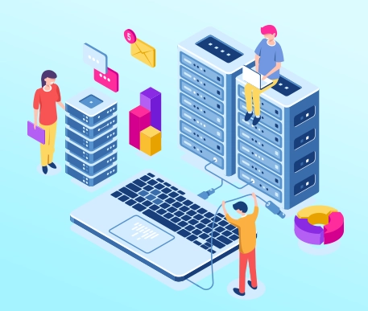

Five Years of Always-On Infrastructure Management
The technology partner behind a mission-critical corporate workplace.
Executive Summary
For a large financial services organisation, workplace technology needs to work every time, without exception. For over five years, Saitronics has been the technology partner behind the client's critical workplace infrastructure — supporting everything from the Command Centre and boardrooms to CEO cabins, cafeteria, PA systems, displays and IT equipment.
With a dedicated resident engineer, critical spares on-site and a two-hour resolution commitment, we provide an always-available layer of technical support across the organisation. Whether it is a critical system failure, an unexpected disruption or simply a technology requirement that needs attention — Saitronics is there.

The Saitronics Solution: Always There. Always Ready.
Our resident engineer provides immediate on-site support, ensuring issues are identified and addressed without the delays of conventional service models. From the smallest technical requirement to a critical infrastructure failure, the client has one trusted partner to call.
Two-Hour Resolution
Our service commitment is straightforward: when something goes down, we get it running within two hours.
Infrastructure That Never Has to Wait
Critical spare parts for LED systems, displays and other essential equipment are maintained on-site, enabling faster restoration and minimising dependence on external procurement.
One Partner Across the Workplace
Saitronics manages the technology ecosystem across:
- Command Centre
- Boardrooms
- CEO Cabins
- Cafeteria
- PA Systems
- Displays
- IT Infrastructure
The Outcome
A long-term technology relationship extending well beyond conventional AMC support.
Rapid response to failures and disruptions across critical environments.
Technical expertise available on-site whenever the organisation needs it.
Critical spares and proactive support designed to minimise downtime.
One technology partner supporting the client's workplace infrastructure end-to-end.
More Than Maintenance. A Technology Partner on the Ground.
For five years, Saitronics has been more than a service provider — we have been an extension of the client's technology team, ensuring that whenever they need something, we're there to make it happen.
Project Snapshot
- ClientLeading Financial Services Enterprise
- IndustryBanking & Financial Services
- DeploymentCorporate Headquarters
- ScopeEnterprise AV, IT & Workplace Infrastructure
- EngagementLong-Term Technology Partnership & On-Site Infrastructure Management